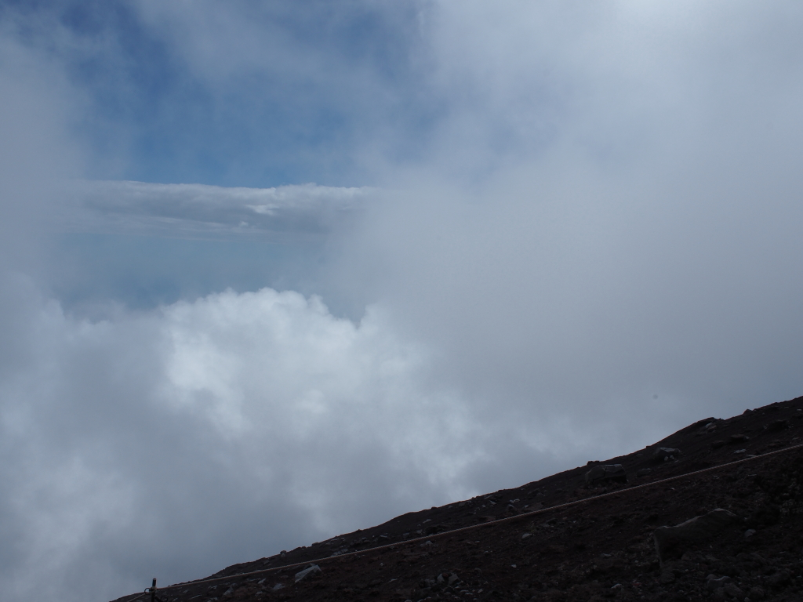

＜ 富士山 ＞
今回の世界遺産の旅は、以下の理由で念願だった富士山への登頂です。
①世界遺産：富士山の世界遺産は25か所で構成されています。周りの神社、湖、遺跡などは訪問しましたが山頂は行ってなかった。
②一宮：麓にある富士山本宮浅間大社は参拝済なので一宮は制覇していますが、この神社の奥宮が富士山の山頂にある。
③日本の四端：一般の人が行ける日本の東西南北の四端（沙布岬、与那国島、波照間島、宗谷岬）は制覇しましたが、最高地点が残っていた。
【1日目・8/14】
1日目は富士山の麓までの移動です。時間があまるので続百名城に寄り道です。
諏訪原城。
城跡には茶畑が広がります。
続いて高天神城。
本丸跡。
若干の山城でした。
明日富士山に登るので富士山本宮浅間大社を参拝します。
ここは一宮なので以前に参拝しています。
【2日目・8/15】
水ケ塚公園まで来ました。
登山できる時期は富士宮口五合目には車では行けないのでここからシャトルバスで移動です、
富士山は五合目から山頂まで登る登山道は４本あります。
①吉田ルート 五合目の標高：2,305m、コースタイム登り6時間25分、下り3時間50分
②富士宮ルート 五合目の標高：2,400m、コースタイム登り5時間45分、下り3時間50分
③須走ルート 五合目の標高：2,000m、コースタイム登り7時間00分、下り3時間40分
④御殿場ルート 五合目の標高：1,440m、コースタイム登り8時間15分、下り4時間30分
今回、富士宮の山小屋が取れたので富士宮ルートから登ります。
富士宮は五合目の標高が一番高く、登りのコースタイムも最短ですが、一番急登です。
高山病対策のために1時間ほど待機して、富士宮口五合目から登ります。
標高差1,386m、頑張って登りましょう。
9:26スタート。
右手に宝永火口が見えます。
標高3,000mです。
先に見えるのは山小屋に荷物を運ぶキャタピラー付きの車両が通る道です。
登っていくと天気が悪くなってきました。
8合目まで来ました。
ここから先は富士山本宮浅間大社の境内です。

ときおり晴れ間があると雲の上にいることが分かります。
岩場を登っていきます。
柱部分が残っている鳥居です。
9合目まで来ました。あと少し。
9.5号目です。
山頂は曇ってますね。
山頂が見えてきました。

16:10、山頂にある奥宮に到着。
6時間44分で登頂です。
コースタイムは休憩時間を除いた歩行時間の目安です。
途中の山小屋で昼食をとった時間を引いても、でコースタイムより30分ほどは多くかかりました。
朱印を頂きに行きます。
頂いた朱印。
曇っていて火口も見えません。
今日は山頂にある山小屋に宿泊です。
山小屋は大部屋で布団がびっしり敷いてあります。一応上を向いて寝れる幅はありました。
【3日目・8/16】
4:00から朝食、4:30にチェックアウトです。
朝食のあと外に出ると山小屋のすぐ前で5:00のちょっと前から御来光がみれるはずですが。
天気が悪く、御来光が。。。。見えない。残念。
ここからは最高地点の剣ヶ峰はすぐなので向かいます。
剣ヶ峰にある気象観測所。もう使われてはいないようです。
頂上にある三角点です。

こちらが三角点。
富士山の山頂3,776mにある碑です。日本の最高地点に登頂しました。
この後、6:06から下山し、10:03に5合目に降りました。下りは3時間57分でした。
途中の山小屋でうどんを食べた時間を引くと、下りはコースタイムより少し早かったです。
疲れたので富士宮で1泊してから4日目に帰宅しました。
御来光は見えませんでしたが、奥宮参拝、日本最高地点到達ができたので目的達成です。
おわり